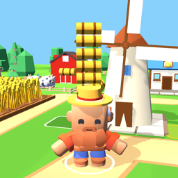

Farmer GuyFarmer Guy – Privacy Policy / Gizlilik Politikası
Last updated / Son güncelleme: 2026-10-17
English
Farmer Guy ("the game") is made by CNSVERYNS ("we"). This policy explains what data the game handles and why.
Data we collect ourselves: None. The game has no accounts and no servers of our own. We do not receive your name, email, location or contacts.
Data stored on your device: Your game progress (coins, gems, unlocked buildings, upgrades, purchases you made, settings) is saved only on your device so you can continue where you left off. Uninstalling the game deletes it.
Advertising (Google AdMob): The game shows ads through Google AdMob, including optional videos you can choose to watch for in-game rewards. To show and measure ads, Google may collect and process data such as your device's advertising ID, IP address, device and app information, and how you interact with ads. In the European Economic Area, the UK and Switzerland the game asks for your consent before personalized ads are shown; you can change your choice at any time from the Settings screen ("Privacy choices"). You can also reset or delete your advertising ID in your device settings. Learn how Google uses this data: https://policies.google.com/technologies/partner-sites
In-app purchases (Google Play / Apple App Store): Purchases are processed entirely by Google Play or the Apple App Store. We never see your payment details. The game only stores on your device which items you bought.
Permissions: Internet access (for ads and purchases), network state, and vibration for feedback. No other permissions.
Children: The game is not directed at children under 13, and we do not knowingly collect personal information from children.
Data deletion: We hold no data about you. Uninstalling the game removes all local data. For advertising data, use your device's ad settings or Google's controls at https://myadcenter.google.com
Changes: If this policy changes, the new version will be published at this address with a new date.
Contact: yunuscansever@proton.me
Türkçe
Farmer Guy ("oyun") CNSVERYNS ("biz") tarafından geliştirilmiştir. Bu politika oyunun hangi verileri neden işlediğini açıklar.
Bizim topladığımız veriler: Hiçbiri. Oyunda hesap yoktur ve kendi sunucumuz yoktur. Adınız, e-postanız, konumunuz veya kişileriniz bize ulaşmaz.
Cihazınızda saklanan veriler: Oyun ilerlemeniz (paralar, elmaslar, açılan binalar, yükseltmeler, satın aldıklarınız, ayarlar) yalnızca cihazınızda saklanır. Oyunu kaldırdığınızda silinir.
Reklamlar (Google AdMob): Oyun, oyun içi ödül için isteğe bağlı izleyebileceğiniz videolar dahil, Google AdMob üzerinden reklam gösterir. Reklamları göstermek ve ölçmek için Google; cihazınızın reklam kimliği, IP adresi, cihaz ve uygulama bilgileri ve reklamlarla etkileşiminiz gibi verileri toplayıp işleyebilir. Avrupa Ekonomik Alanı, Birleşik Krallık ve İsviçre'de kişiselleştirilmiş reklamlardan önce izniniz istenir; tercihinizi Ayarlar ekranındaki "Gizlilik seçenekleri" ile istediğiniz zaman değiştirebilirsiniz. Reklam kimliğinizi cihaz ayarlarından sıfırlayabilir veya silebilirsiniz. Google'ın bu verileri nasıl kullandığı: https://policies.google.com/technologies/partner-sites
Uygulama içi satın almalar (Google Play / Apple App Store): Ödemeler tamamen Google Play veya Apple App Store tarafından işlenir. Ödeme bilgilerinizi hiçbir zaman görmeyiz. Oyun yalnızca hangi ürünleri aldığınızı cihazınızda saklar.
İzinler: İnternet erişimi (reklamlar ve satın almalar için), ağ durumu ve geri bildirim için titreşim. Başka izin yoktur.
Çocuklar: Oyun 13 yaşından küçük çocuklara yönelik değildir ve çocuklardan bilerek kişisel bilgi toplamayız.
Veri silme: Sizinle ilgili hiçbir veri tutmuyoruz. Oyunu kaldırmak tüm yerel verileri siler. Reklam verileri için cihazınızın reklam ayarlarını veya https://myadcenter.google.com adresini kullanabilirsiniz.
Değişiklikler: Politika değişirse yeni sürüm yeni tarihle bu adreste yayınlanır.
İletişim: yunuscansever@proton.me